CAPÍTULO 2 - Ângulos
Recordando ângulos
Neste capítulo, vamos rever alguns conceitos e conhecer algumas aplicações dos ângulos. Nos anos anteriores, você aprendeu a fazer algumas construções geométricas utilizando régua, esquadro, transferidor e compasso. Vamos recordar e aprender novas construções?
Ângulo de 90°
A medida de abertura de um ângulo reto equivale à metade da medida de abertura de um ângulo raso, ou seja, 90º. Todo ângulo cuja medida de abertura é igual a 90º é chamado de ângulo reto.

Entendemos que retas perpendiculares são aquelas que formam um ângulo de 90º entre si, passando por um ponto P dado. Agora, vamos traçar retas perpendiculares entre si? Para traçá-las, você vai precisar de um par de esquadros:
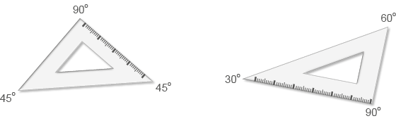
Faça o maior lado do esquadro de 45º coincidir com a reta dada r.
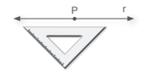
Faça o maior lado do esquadro de 45º coincidir com a reta dada r.
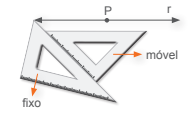
42
Mude a posição do esquadro de 45º, conforme a ilustração.
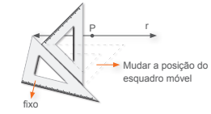
Faça o maior lado do esquadro de 45º coincidir com a reta dada r.
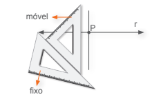
Pronto! Vamos nomear a reta perpendicular à reta r de s.
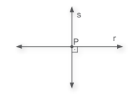
Ângulo de 60°
A medida de abertura de um ângulo de 60° pode ser encontrada nos ângulos internos de um triângulo equilátero.
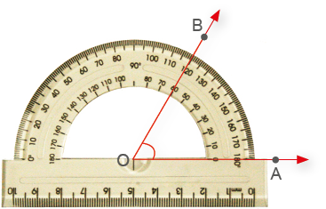
Observe como podemos construir esse ângulo.
1.º Com uma régua, vamos traçar um segmento de reta 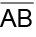 medindo 4 cm. Este segmento será a base do triângulo.
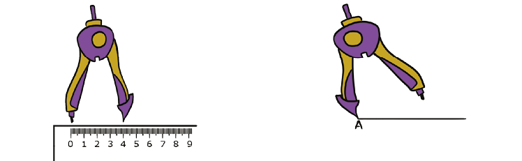
43
2.º A partir do ponto A, com o auxílio de um compasso com abertura igual à medida do comprimento , marque um arco.
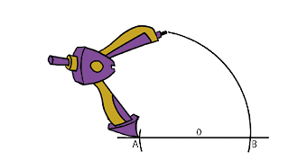
3.º Em seguida, com a ponta-seca em B e mesma abertura, traçamos outro arco cruzando o anterior, determinando assim, o ponto C.

4.º Traçamos a semirreta 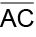, obtendo assim, o ângulo em 60°.
Observe os passos a seguir:
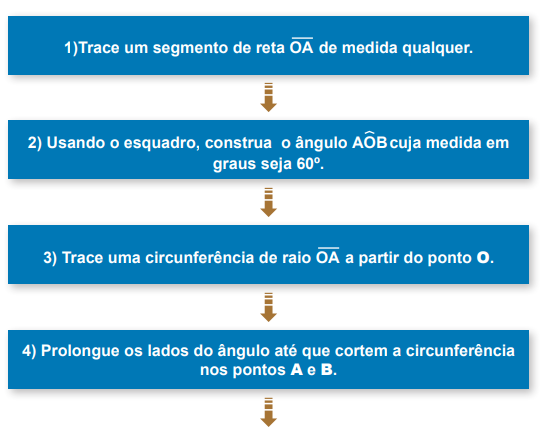
44
![Continuação do Esquema passo a passo separados por retângulos azuis e separados por flechas marrons apontadas para o passo seguinte. Passo 5: Usando o compasso com abertura AB, coloque a ponta-seca em B e trace um arco cortando a circunferência em C (C e A devem ser distintos). Passo 6: Usando o compasso com abertura BC e com a ponta-seca em C, encontre o ponto D distinto de B. Passo 7: Usando o compasso com abertura CD e com a ponta-seca em D, encontre o ponto E distinto de C. Passo 8: Usando o compasso com abertura DE e com a ponta-seca em E, encontre o ponto F distinto de D. Passo 9: Trace os segmentos AB, BC, CD, DE, EF e FA para formar a figura.](../../resources/images/8ANO_U2_image/esquema2.png)
- Qual figura foi construída?
- Agora, siga os passos do fluxograma e construa, em seu caderno, essa figura.
Aprendemos também, nos anos anteriores, que a bissetriz de um ângulo é a semirreta com origem no vértice desse ângulo, dividindo-o em dois ângulos adjacentes congruentes.
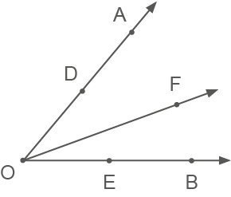
Relembre como podemos construí-la, em seu caderno:
45
![Esquema passo a passo de 1 a 4, separados por retângulos marrons e separados por flechas verdes apontadas para o passo seguinte. Passo 1: Construa um ângulo AOB, com uma medida qualquer. Passo 2: Usando o compasso, coloque a ponta-seca no vértice O. Com uma abertura qualquer, marque os pontos D e E nos lados do ângulo. Passo 3: Coloque a ponta-seca do compasso em D e desenhe um arco. Depois, coloque-a em E, com a mesma abertura, e repita o procedimento. Marque o ponto F, no qual os arcos se intersectam. Passo 4: Em seguida, trace a semirreta OF, bissetriz do ângulo AOB.](../../resources/images/8ANO_U2_image/esquema3.png)
►Encontre soluções
- Utilizando régua e transferidor, represente em seu caderno os ângulos:
- 30º
- 45º
- 150º
- Utilizando um transferidor, meça os ângulos indicados e anote a medida em seu caderno.
- 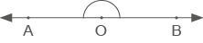
- 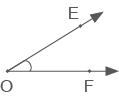
- 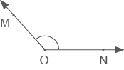
- 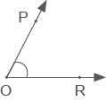
- Sem utilizar o transferidor, descubra a medida de cada um dos ângulos indicados.
- BÔC = ?
![Ilustração de três semirretas , com os pontos C, B, A, saindo do mesmo vértice, nominado O. Elas estão espaçadas entre si, com aberturas que formam dois ângulos diferentes. Duas semirretas estão na horizontal, a semirreta com o ponto C apontada para a esquerda do vértice O, e a semirreta com o ponto A está apontada para a direita do vértice, formando um ângulo de 180°. A semirreta com o ponto B está apontada para cima e levemente inclinada para a direita. O ângulo AOB está identificado com a medida de75 graus. O ângulo BOC está sem identificação de medida.](../../resources/images/8ANO_U2_image/M8A_34.png)
- NÔP = ?
![Ilustração de três semirretas , com os pontos P, N, M, saindo do mesmo vértice, nominado O. Elas estão espaçadas entre si, com aberturas que formam dois ângulos diferentes. A semirreta com o ponto M está na horizontal apontada para a direita do vértice O. A semirreta com o ponto P está apontada para cima, formando um ângulo de 90° com a semirreta com o ponto M. A semirreta com o ponto N é diagonal apontada para cima e à direita , formando com a semirreta com o ponto M, um ângulo de 38 graus. O ângulo NOP está sem identificação de medida.](../../resources/images/8ANO_U2_image/M8A_35.png)
- DÔE = ?
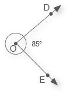